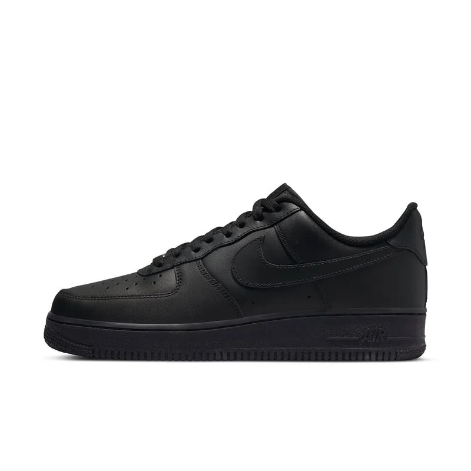
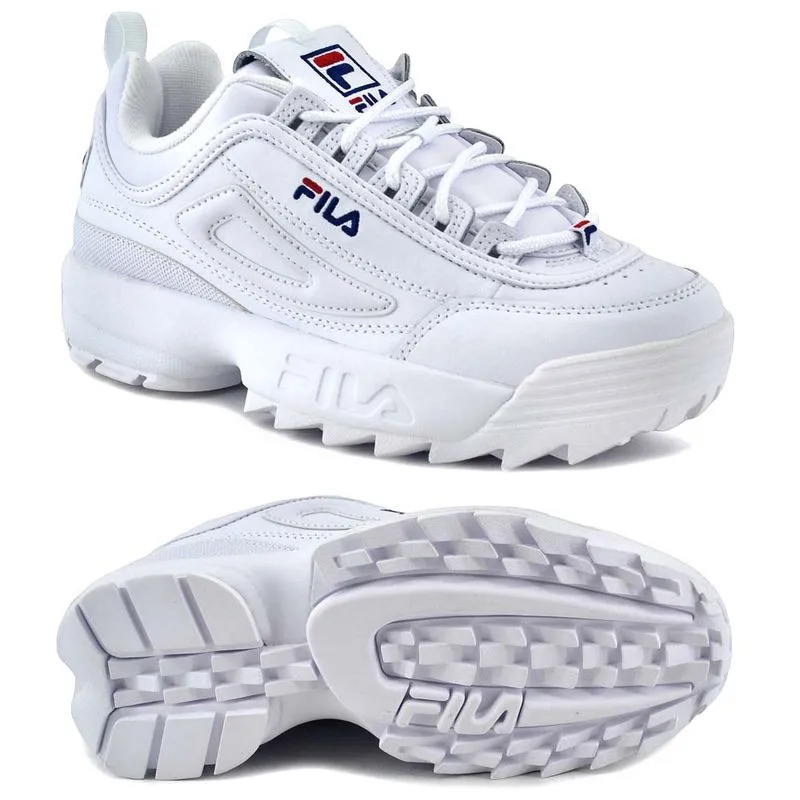
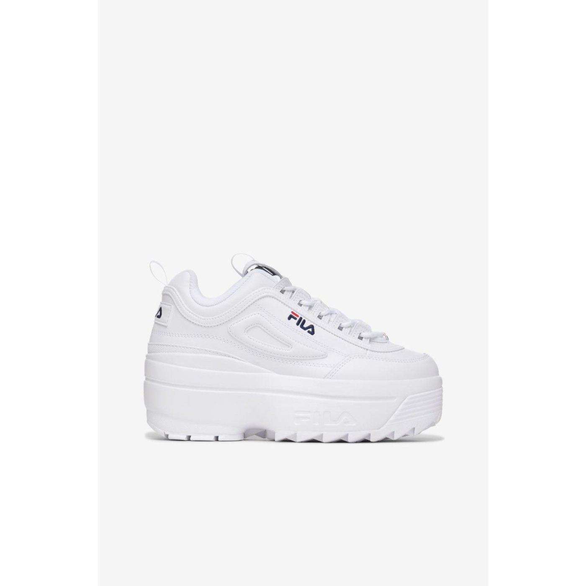

ZAPATILLAS
CATALOGO.
zapatillas Nike
La empresa fue fundada el 25 de enero de 1964 como "Blue Ribbons Sports" por Phil Knight y Bill Bowerman,[7] 8y se convirtió oficialmente en Nike Inc., el 30 de mayo de 1971. Nike comercializa sus productos bajo su propia marca, así como bajo Nike Golf, Nike Pro, Nike+, Air Jordan, Nike Skateboarding, Hurley International y Converse, Nike CR7,9 entre otras


zapatillas fila
surge en 1911 como una empresa familiar italiana. Fundada por Giansevero Fila en Biella realizaba, originalmente, prendas para los habitantes de los alpes italianos. El foco inicial fue la ropa interior y recién hacia 1970 comenzó a generar prendas deportivas. El vínculo comenzó acompañando al tenista sueco Bjorn Borg y luego siguió la expansión a nivel internacional a cargo del director ejecutivo Enrico Frachey. Fue la primera empresa en llevar sus colores a la cancha con la colección White Line e innovaciones destacadas en indumentaria dedicada al alpinismo, el esquí, al básquet, a los deportes acuáticos y de motor como al golf. En 1978 Reinhold Messner alcanzó la cima del monte Everest usando ropa de montaña Fila de alta tecnologí.


.jpg)